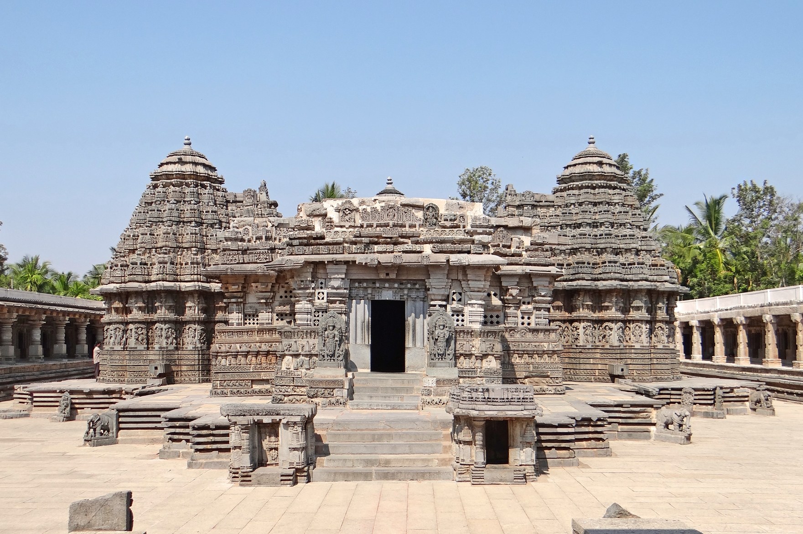
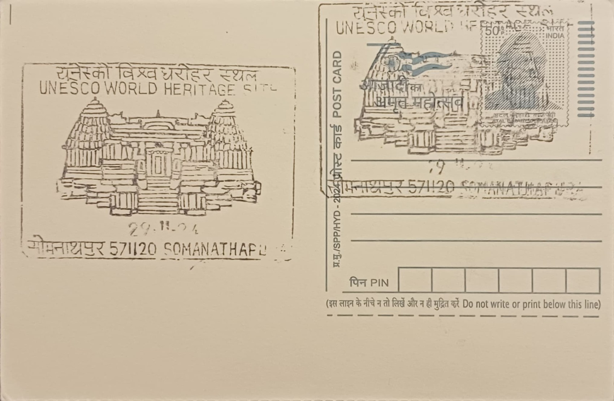

The Chennakeshava Temple at Somanathapura takes its name not from a legendary founder but from the man who commissioned it: Somanatha Dandanayaka, a senior military commander under the Hoysala king Narasimha III. Around the middle of the thirteenth century, Somanatha established an agrahara settlement on the left bank of the river Kaveri and named it Somanathapura after himself, then sought royal sanction to build a temple there that would showcase the finest craftsmanship his position could command. The settlement and temple together were conceived as a deliberate act of patronage rather than a spontaneous miracle or folk legend, typical of the way Hoysala generals used religious endowments to cement their standing.
Dedicated to Vishnu under three distinct forms, the temple belongs to the trikuta or triple-shrine category of Hoysala architecture, with sanctums honouring Keshava, Janardhana and Venugopala. It is widely regarded as the last great Hoysala temple built before the dynasty's decline, and its design is often cited by art historians as the most structurally refined and complete example of the style, even surpassing the larger but less symmetrical temples at Belur and Halebidu in planning. Along with those two sites, it was inscribed by UNESCO in 2023 as part of the "Sacred Ensembles of the Hoysalas" World Heritage listing, recognising the trio as the fullest surviving expression of this distinctive South Indian idiom.
Construction is generally dated to 1258 CE, with some sources placing its completion closer to 1268 CE, built under Somanatha's direct commission during Narasimha III's reign. The temple stands on a high, star-shaped jagati platform that allows devotees to circumambulate the shrine while viewing its sculpture at close range, and its three garbhagriha are arranged symmetrically around a shared central mandapa supported by lathe-turned pillars, a hallmark of Hoysala masonry technique. As with related temples of the period, artisans worked in soapstone while it was still quarry-soft, carving tightly packed horizontal friezes of episodes from the Ramayana, Mahabharata and Bhagavata Purana along the outer walls before the stone hardened with prolonged air exposure.
A particularly notable feature is the temple's finely carved main doorway and ceiling panels, which were damaged over the centuries, likely during the raids on Hoysala territory by Delhi Sultanate forces under Alauddin Khalji in the early fourteenth century and later under Muhammad bin Tughluq, episodes that also account for the loss of the original images from two of the three sanctums. Unlike many contemporary Hoysala shrines that fell into disuse after such campaigns, Somanathapura's structure survived largely intact in form even where its icons and doorframe were damaged, allowing its sculptural programme to be read almost in its entirety today.
The temple's carved door was restored by the Archaeological Survey of India in 1958, and ASI continues to list and maintain the monument as a centrally protected site, controlling access and conservation work on the star-shaped platform and surrounding enclosure. Tourism authorities in Karnataka promote the site jointly with Belur and Halebidu as part of a standard Hoysala heritage circuit from Mysuru, and it draws a steady stream of visiting scholars and photographers studying Hoysala sculptural technique specifically because of how completely its carved surfaces have survived. The site today functions primarily as a protected monument and study destination rather than an active site of daily worship, its three empty or replaced sanctums now visited chiefly for their craftsmanship rather than ritual use.
| Date of Introduction | January 2, 1978 |
|---|---|
| Address | Branch Postmaster, |
| Somanathapura BO, | |
| Mysuru (dt.), Karnataka - 571120. |